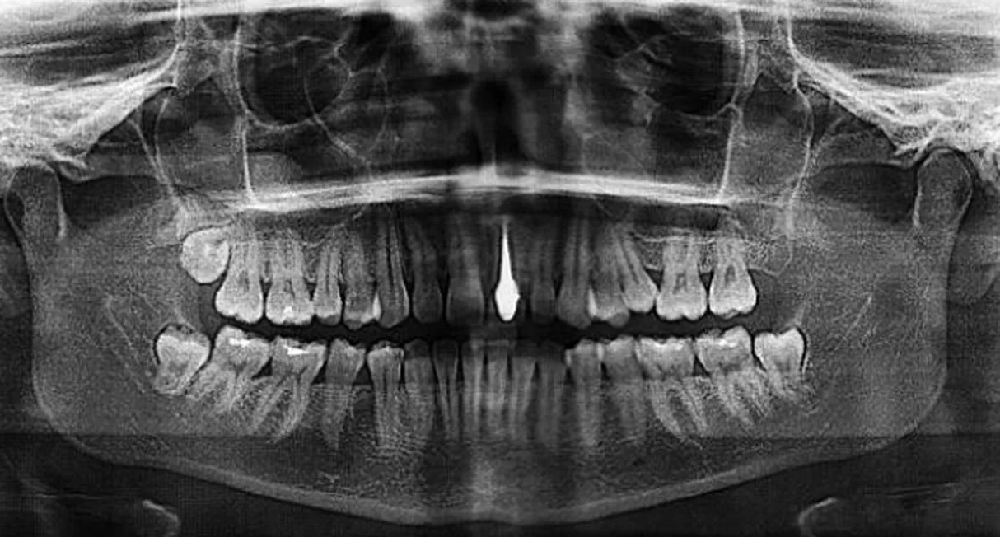
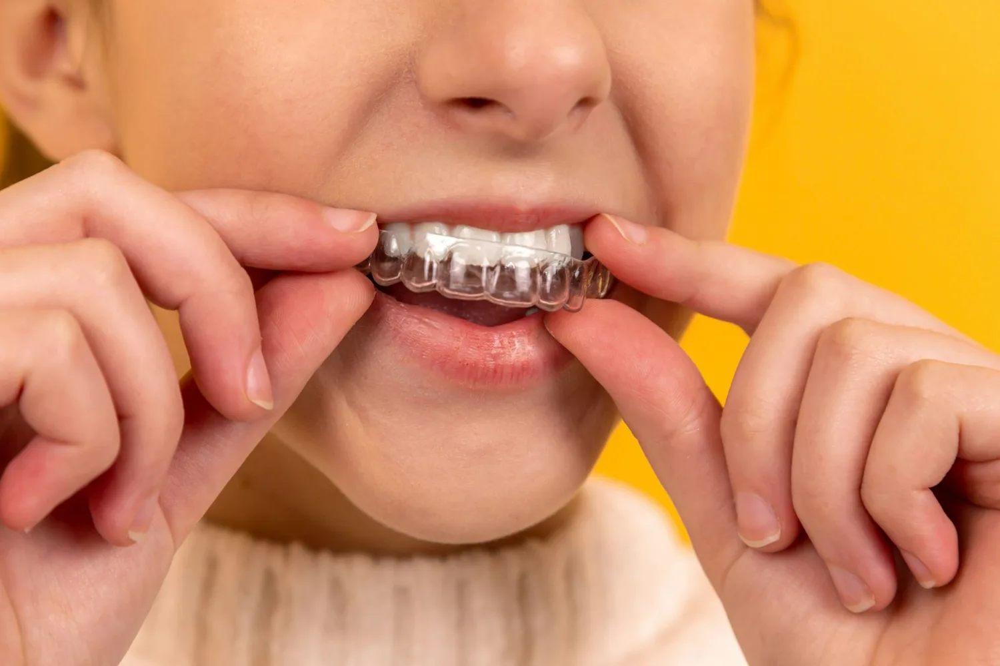
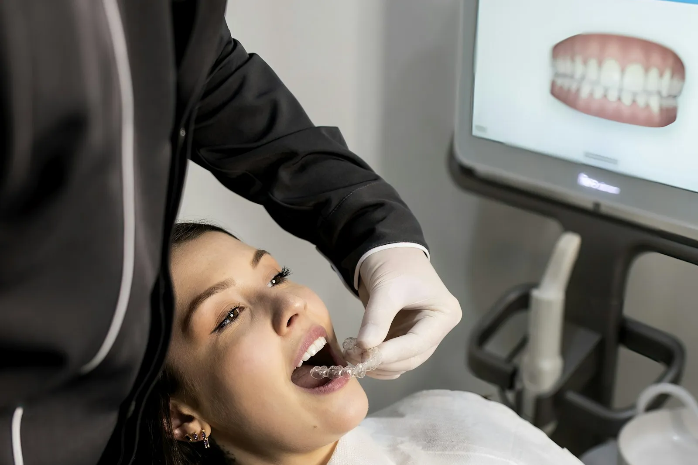
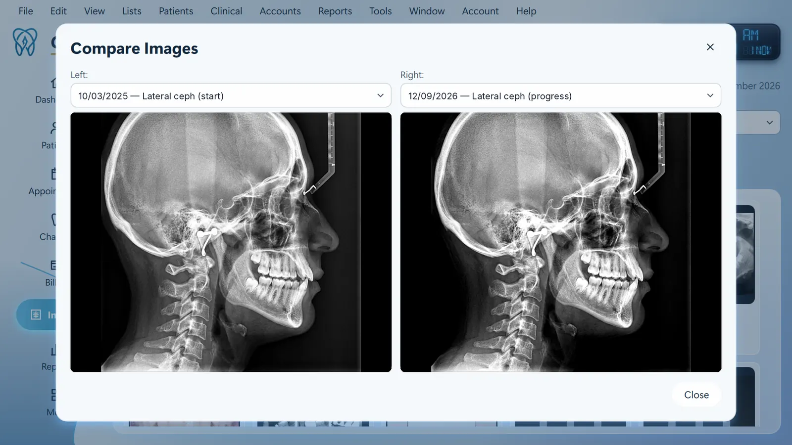

01 / 05 · Records & imaging
A full records set, one slot at a time
Imaging → Capture Sequence
Capture the standard orthodontic records in order, with every picture landing in the right place.
- Ready-made layouts: Ortho Records Photos (eight extraoral and intraoral views), Ortho Records Radiographs (panoramic and lateral ceph) and an Ortho Progress set of three intraoral views.
- Adapt them, or build your own.
- Mirror shots are flipped the right way round automatically.
- Skip a slot, retake one, or finish the set later.

02 / 05 · Records & imaging
Labelled by stage: initial, progress, debond, final
Settings → Features → Capture Timepoints
Every capture is labelled with the stage of treatment it belongs to.
- Baseline, Initial Records, Progress, Pre-Debond, Final Records and Retention Review, or your own.
- The stage is asked for when a capture starts, and shown as a badge in the gallery.
- Filter the gallery to one stage.
- Compare Timepoints shows the same views at two stages side by side, and prints them.

03 / 05 · Records & imaging
Straight from the camera
Capture Sequence → Hot Folder
Photos from the clinical camera drop into the open sequence's slots by themselves.
- A watched folder for each workstation.
- Each new picture fills the next slot, with Undo if one lands wrong.
- Originals are moved into a dated folder, so nothing is imported twice.

04 / 05 · Records & imaging
Intraoral scans and study models
Imaging → Import 3D Model
Bring in the patient's intraoral scans and measure them.
- Import scans and scanned plaster models into the patient's record.
- Measure distances and each tooth's width.
- Follow the arch to get the space available against the space needed: crowding or spacing in millimetres.
- Bolton's anterior and overall ratios, with the excess on the arch that has too much tooth material.
- A guide for the clinician: picking points on a screen is only as good as the scan.

05 / 05 · Records & imaging
Start and progress, side by side
Imaging → Compare
Put any two images next to each other to see how treatment is going.
- Pick each side from the patient's images, from any stage.
- Zoom and pan both together.
